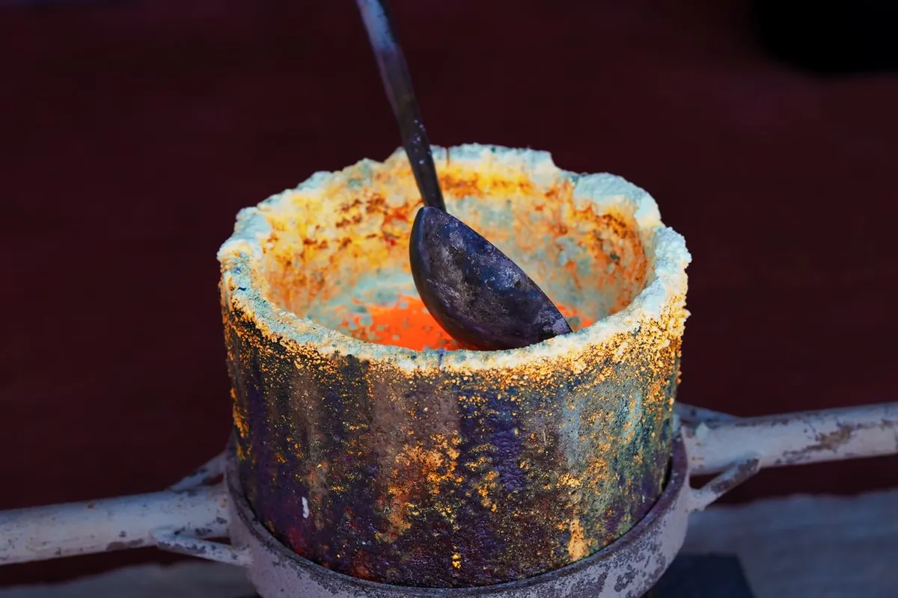

«Из чего лить?» — один из первых вопросов при заказе скульптуры или декоративного изделия. Бронза, латунь и мельхиор — три основных металла художественного литья — похожи внешне, но принципиально различаются по свойствам, цене и применению. Разберёмся с каждым.

Бронза
Бронза — сплав меди и олова (обычно 90% Cu + 10% Sn). Именно этот материал дал имя целой исторической эпохе, и причина проста: бронза сочетает прочность, пластичность в жидком состоянии и долговечность готового изделия.
Преимущества
- Высочайшая долговечность: бронзовые изделия служат тысячелетиями.
- Отличная заполняемость формы: воспроизводит мельчайшие детали.
- Хорошо поддаётся патинированию: широкий выбор цветов.
- Устойчивость к морской воде и атмосферным воздействиям.
Ограничения
- Самый дорогой из трёх: от 4 000 ₽ за кг.
- Тяжёлый: плотность около 8,8 г/см³.
Когда выбирать
Монументальная скульптура, мемориальные таблички, уличные объекты, изделия, рассчитанные на столетия. Если бюджет позволяет и важна долговечность — бронза.
Латунь
Латунь — сплав меди и цинка (обычно 60–70% Cu + 30–40% Zn). Внешне похожа на бронзу, но имеет более тёплый жёлтый оттенок — как у золота. Именно поэтому её часто выбирают для декоративных изделий, которые должны выглядеть «золотыми».
Преимущества
- Дешевле бронзы на 20–35%.
- Красивый золотистый цвет без покрытия.
- Хорошо полируется — даёт зеркальную поверхность.
- Легко обрабатывается после литья.
Ограничения
- Менее устойчива к влаге и агрессивным средам, чем бронза.
- Темнеет быстрее без защитного покрытия.
Когда выбирать
Интерьерная скульптура, фурнитура, наградные знаки, сувениры, декоративные таблички внутри помещений. Хорошее соотношение цены и внешнего вида.
Мельхиор
Мельхиор (нейзильбер) — сплав меди, цинка и никеля. Отличается характерным холодным серебристо-белым блеском. В художественном литье используется реже, но создаёт особый эффект: изделия выглядят как серебряные по доступной цене.
Преимущества
- Серебристый цвет без использования серебра.
- Хорошая стойкость к окислению.
- Отлично сочетается с чёрным патинированием.
Ограничения
- Сложнее в обработке, чем бронза или латунь.
- Меньше возможностей для патинирования.
- Не используется для крупных уличных объектов.
Когда выбирать
Декоративные фигуры, украшения, настольные скульптуры, где нужен «серебряный» эффект. Хорошо смотрится рядом с бронзовыми элементами — контраст металлов создаёт интересный визуальный эффект (как в нашей серии «Селфи»).


Сводная таблица
| Параметр | Бронза | Латунь | Мельхиор |
|---|---|---|---|
| Цвет | Тёплый золотисто-коричневый | Жёлтый золотой | Серебристо-белый |
| Цена | от 4 000 ₽/кг | от 2 800 ₽/кг | от 3 200 ₽/кг |
| Улица | ✓ Отлично | ✓ Хорошо | — Интерьер |
| Патинирование | Богатая палитра | Хорошее | Ограниченное |
Если вы не уверены, что выбрать — позвоните или напишите нам. За 15 минут разговора мы поймём задачу и подберём оптимальный материал с учётом места установки, бюджета и эстетических предпочтений.
Не уверены, какой металл выбрать?
Опишите задачу в Telegram — подберём материал, рассчитаем стоимость и объясним все отличия на конкретном примере.
Написать в Telegram →